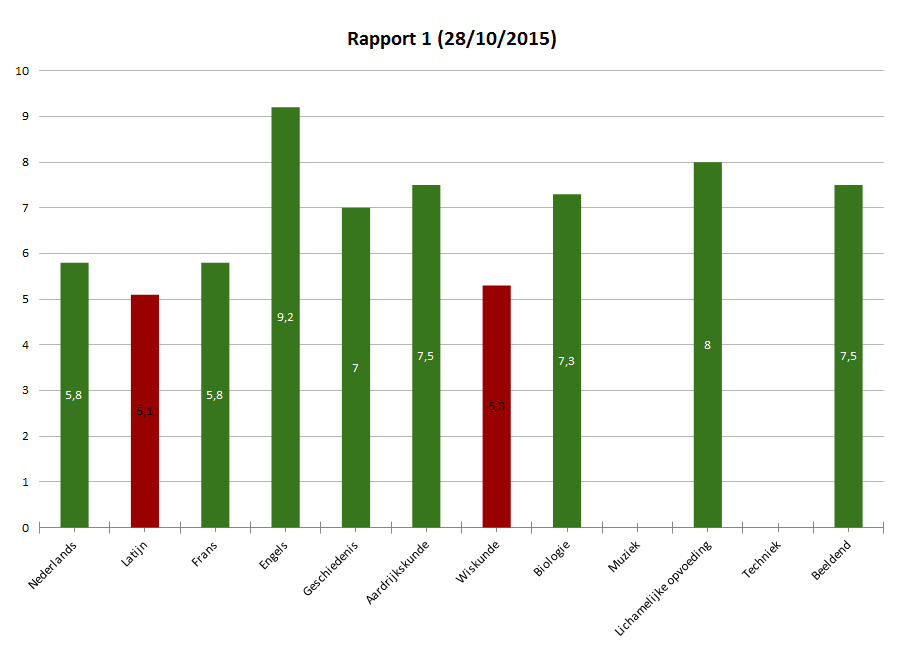

Barlaeus Techniek 2016-2017
Website ter ondersteuning van het vak techniek voor klas 1A van het Barlaeusgymnasium.
Project #2: Spreadsheet
1: Cijferoverzicht
Maak een cijferoverzicht per vak van al je cijfers.
- Noteer overzichtelijk per vak alle cijfers die je gehaald hebt.
- Je kunt door te beginnen met een '=' een formule invullen in een cel. Reken hiermee je gemiddelde cijfer per vak uit.
- Maak nu een kopie van het werkblad.
- Voeg nu in de kopie boven elke rij met een vak erop een regel in en noteer hier de wegingen voor elke toets.
- Reken nu nogmaals je gemiddelde uit, maar de formule voor elk vak kan nu dezelfde zijn m.b.v. de functies SUM (SOM) en SUMIF (SOM.ALS)
- Maak nu van je cijfers een staafdiagram met de volgende eisen:
- zet boven elke staaf het berekende gemiddelde
- zet de naam van elk vak schuin onder elke staaf
- maak alle onvoldoendes rood

2: Beoordelingsmatrix website
Reken je cijfer uit m.b.v. het beoordelingsmodel. De puntentelling is als volgt:
- -2 pnt. per missend verplicht onderdeel
- 0 pnt. per onvoldoende
- 1 pnt. per voldoende
- 2 pnt. per ruim voldoende
- 3 pnt. per goed
- +1/2/3/4 per bonus onderdeel
Je cijfer (C) berekenen m.b.v. het totaal aantal punten (N) en de volgende formule: C = (N/20)*6 + 4.